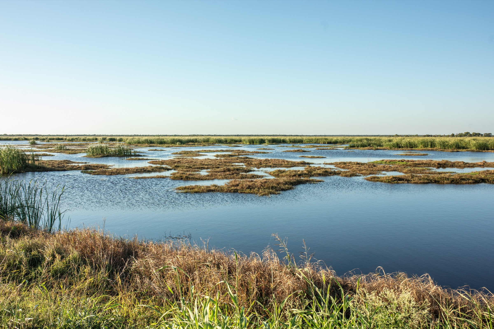

water’s down another inch since last week, and i checked the south gauge twice to be sure. saw two black-necked stilts near the intake making enough noise for six birds, which was nice considering how few we’ve had lately.

Laguna Honda Reservoir
Shoreline trails, freshwater wetlands, and wildlife observation areas.
From the keeper logs
later she said she liked my shirt, which she’s said about the last three. apparently i’m supposed to take a hint.
we’d moved it about six feet when the bottom tore open and a family of mice came running out, sending him backward so fast he nearly fell into the ditch. i laughed so hard i had to sit down, which he didn’t appreciate.
Visitor information
Trails and access
The park is open to the public for day visits. Designated trails follow sections of the reservoir shoreline and run through the north marsh. Surfaces are mostly packed earth and can be wet after rain.
Laguna Honda covers a much larger area than its maintained visitor trails. Access beyond marked public routes is restricted, including some former trails and shoreline areas.
The visitor center is the best place to ask about current conditions and accessible routes.
Observation platforms
Observation platforms on the south and east sides of the reservoir provide views over the shallows without disturbing the birds. Some platforms and connecting paths are older, and access may be limited by maintenance conditions.
Please follow posted signs and watch your step on older boards.
Visitor guidance
- Stay on marked trails and platforms.
- Do not feed, chase, or handle wildlife.
- Keep dogs on a leash.
- Carry out what you carry in.
- Observe posted signs and closures.
Boat ramp and fishing
The public boat ramp on the reservoir is available to visitors during daylight hours for small boats and shore fishing. Fishing is permitted from the ramp and from marked shoreline areas. Father & Son Fishing Day is held at the park each spring; registration is through Brackwater Parks and Recreation.
Facilities
Restrooms, drinking water, and trail information are available at the visitor center.
Seasonal conditions
Water levels, trail surfaces, and bird activity change through the year. Early morning is usually best for wildlife, and white pelicans are seen mainly in the cooler months. Recent conditions are noted in the keeper logs.
Access restrictions
Public access is limited to designated trails, platforms, and recreation areas. Several former trails and shoreline access points remain closed, including areas where maintenance or staffing limitations prevent regular inspections.
Restricted areas are marked where possible with fencing and signs. The old pump house, the path behind it, and other maintenance areas are closed to the public.
Visitors should check posted notices or ask at the visitor center before entering unfamiliar areas.